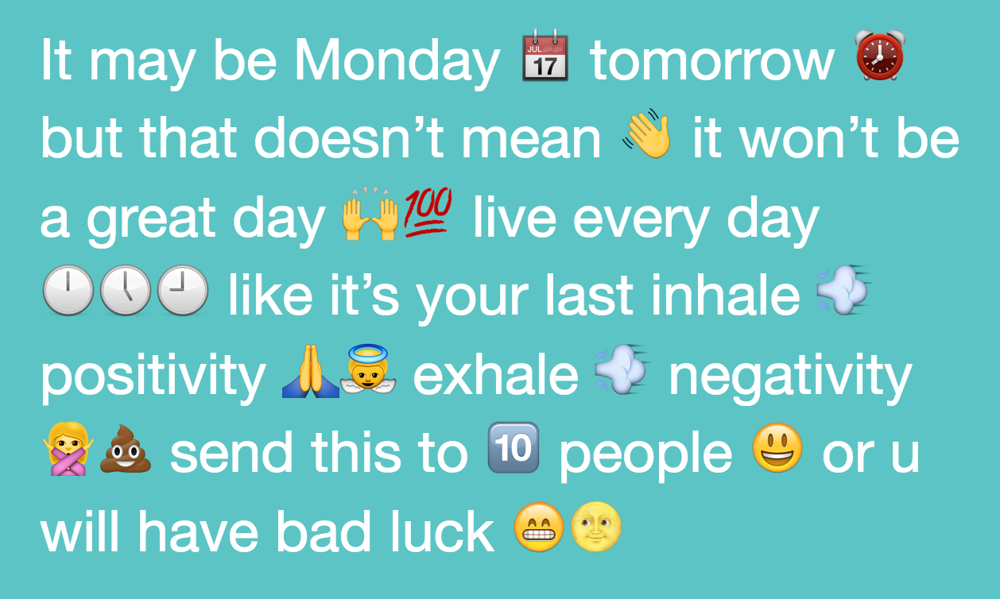
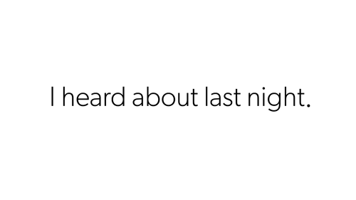
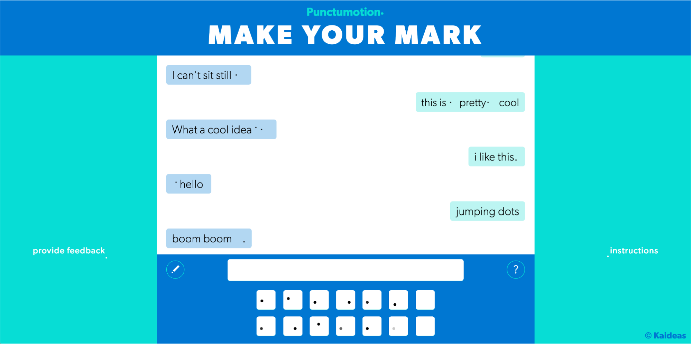
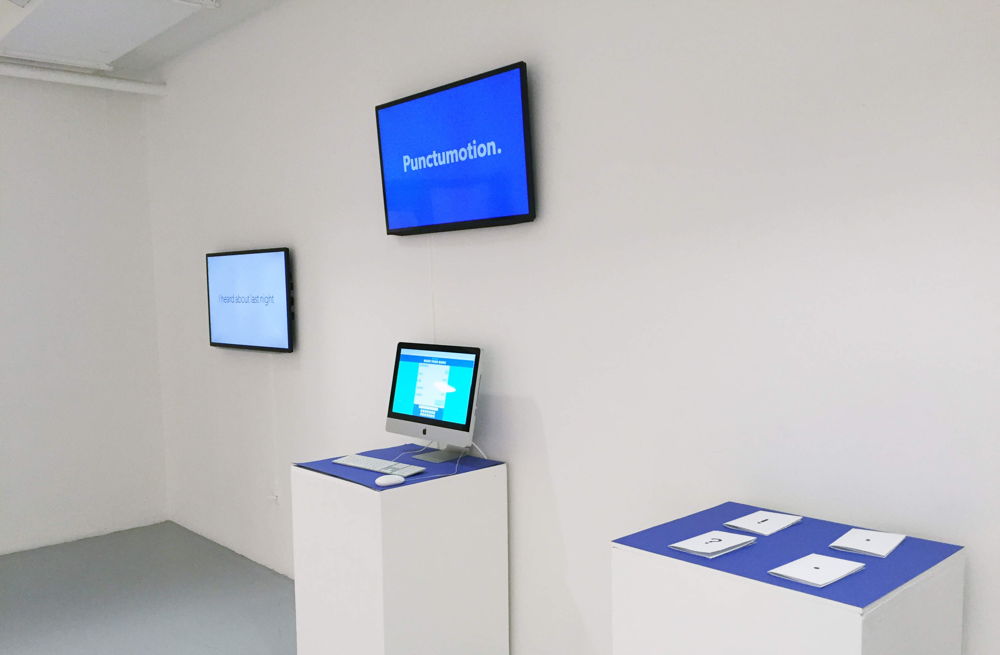

Punctumotion is a novel form of digital punctuation that is cross-typeface, cross-platform and infinite in variation. Punctumotion takes the period—the simplest and most neutral typographic form—and animates it with motion and meaning. While other punctuation innovations have failed because they are too limited in application or unintuitive, Punctumotion is more universal and easier to interpret in context because of its reliance on motion, rather than form, as the differentiating factor. Motion also takes advantage of the screen (traditional punctuation was designed for paper or stone).
The idea for Punctumotion emerged from writing emails. I always struggled, not so much with word choice, but with punctuation choice — specifically, whether to use a period or an exclamation point to convey my default state of pleasant but not hyper. A period comes off as cold. An exclamation point conveys a shout!
I became frustrated with this limited toolkit. Who decided this was the best set of marks we could use to convey our ideas and thoughts? As we communicate more and more through digital, text-based mediums (which combines the language and informality of speech, with the form of prose), we lose many of the nuances of spoken language: tone, inflection, tempo, volume, body language. We use fewer and fewer words to get our ideas across; this linguistic downsizing makes punctuation all the more pointed:
These readings vary person to person (and generation to generation), though there’s no doubt that the punctuation can subtly or wildly change a message’s meaning. As a result, we often don’t fully understand each other online, resulting in misinterpreted passive aggression and unnecessary anxiety.
While punctuation seems more potent than ever, we have very few institutionalized options to express ourselves in computer-mediated, text-based communication. Some textual features, like bold italic and underline have established themselves in the landscape of online typography. People have turned to more demonstrative emojis and GIFs to supplement what’s written with tone and personality. But these are graphic illustrations,

that break up the rhythm and texture of abstract type with their color and concrete depiction.
So, I created Punctumotion, a subtle yet vivid way to communicate our feelings, reactions and tone.
Punctumotion was my senior thesis project at Yale, where I was advised by John Gambell, the Yale University Printer.
I spent the first semester researching punctuation marks, reading invaluable books like Shady Characters by Keith Houston, Making a Point by David Crystal, Visible Language 45.1/2 (Punctuation) edited by Anne Tomer, Design Writing Resarch by Alan Lupton & Abbott Miller, and Glyph by Adriana Caneva & Shiro Nishimoto.
Where did these glyphs come from?
Usually Ancient Greece.
When did they originate?
Often in Ancient Greece (The oldest punctuation mark is the pilcrow, ⁋, from the 4th century BC), but some marks like the exclamation point didn’t emerge until the 14th century in England.
Why did they originate?
Often for oratory guidelines, as text was meant to be read aloud.
In what contexts did they originate?
Nearly always in handwriting (# formed from some messy lb script, hence the pound sign), though most recently the interrobang, ‽
, was designed for print advertising in the 1960s by Martin K. Speckter.
I also researched punctuation on the internet, which I had observed as being a separate beast. Online, many of the standard, ‘official’ rules of grammar are thrown out the window, especially in texts, emails, instant messages and message boards. Ben Yagoda at Slate has many good articles on punctuation in the Internet age.
Exclamation marks are used in the dozens(!!!!!), periods occur in trios (as ellipses) almost as often as solo (or are often omitted altogether…⁺), asterisks correct tyops—typos*, octothorpes (or pound signs) act as categorical identifiers aka #hashtags. Punctuation marks also take on new inflections within their traditional grammatical functions, like the passive aggression of a period (Yep.) and the sincerity of an exclamation mark (Yep!).
⁺ When text messages are sent in message bubbles, the use of a period is seen as redundant or emphatic. The message is over when there’s no more text
After researching history and usage of punctuation, I set out to create a new punctuation mark. I originally wanted to design a hybrid exclamation point/period—some sort of pleasant sentence-ender to solve my email problem. I experimented with different static marks, but mostly discovered that these symbols weren’t very intuitive; they’d need to be taught repeatedly to have any effect, and the likelihood of them catching on was slim.
I refocused my efforts on the medium I was especially interested in the whole time: direct text-based communication on screens.
The most essential difference between the screen and print is that a screen allows for motion.
Since this would be a digital symbol, why did it have to also be static? I had no intention of these marks being used in print. To my surprise, the only attempts at this type of punctuation in motion I could find were in type in motion animations, where every word or phrase used motion to provide meaning. Applying motion to punctuation would endow online text with a touch of humanity: a bounce for happiness, a droop for sadness.
I focused on the period for a few reasons. First, it already existed: it’s in every typeface, on every keyboard, and in Unicode, so there weren’t any institutional or structural barriers to overcome. Second, it is the simplest and most abstract typographic glyph (besides a space), so all of its visual significance (besides the fact that it should end a sentence) would come from its motion. Third, it is historically a neutral symbol (aside from a recent trend of passive aggression) so it is similarly unburdened by any preconceived feelings. If I had chosen an exclamation point, for example, there certainly would be some value added by animating it, but much of the same effect can be achieved by animating a period, and the exclamation point wouldn’t be nearly as versatile in portraying low-intensity emotions.
For implementation, I first tested it out in After Effects, trying different motions and experimenting with different parameters. But I wanted to make something usable — my thesis would be shown in an exhibit, and I wanted to engage viewers with an interactive display. Plus, I wanted to see how people would react to and use this new tool.
I made looping patterns of motion for each Punctumotion mark using CSS animations, and, with the help of my friend and software engineer Josh Isenstein, built a web app that set up a simulated chat-messaging experience, where viewers in the gallery (or anyone who visited punctumotion.com) could type a message, add Punctumotion, and send it, creating a new chat bubble on the web app. I was primarily interested to see how people would engage with Punctumotion, but also intrigued by how this vernacular texting framework might influence how people write to the world, as a sort of structured graffiti wall.
I created a video in After Effects that introduces Punctumotion, and details the reasoning behind Punctumotion and outlines ways it can expand the role of punctuation. The video is silent, just like texting and emailing; I wanted to make the viewer conscious of the way information was conveyed.
I also wrote four pseudobiographies of the Marks—Period Mark, Comma Mark, Exclamation Mark and Question Mark—to illustrate and reinforce the idea that punctuation has been evolving centuries before Gutenberg and continues to do so.
Included towards the end of the video is a sample of how Punctumotion could expand into the world of branding and advertising: companies could design proprietary Punctumotion marks (much like sponsored hashtags on Twitter that are accompanied by personalized emojis) that extend their brands. A wordmark requires a specific typeface, but a user could render a company’s Punctumotion mark in any font. Similar to how companies have trademark sounds (think NBC or Intel or P.C. Richard & Son), companies could use unique Punctumotion marks that would increase their brand awareness and reinforce or enrich their wordmarks with additional information about the company, in a concise and enlivening way.
How we communicate online is evolving. Punctuation is too.